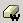

Wanneer een of meer paragrafen met reeds geformatteere tekst door een
andere tekstverwerker (bijv. Microsoft Word of OpenOffice) is ingevoegd,
is het mogelijk dat de grootte van de HTML code enorm wordt. Dit fenomeen
komt voort uit de export methoden tussen de twee applicaties, dat ervoor
zorgt dat er veel onbruikbare en vaak ongeschikte HTML code opgemaakt
wordt. De KTML3 gebruikers hebben de mogelijkheid om tekst van deze
tags te verlossen door gebruik te maken van de "Schoonmaken
HTML Content" optie,
en daarna de KTML3 formattering functies te gebruiken. Het resultaat
is een schonere en betere code.
Let op: Wanneer u gebruikt maakt van deze optie heeft
dat gevolgen voor alle code in uw pagina. Deze optie maakt niet alleen
tekst schoon die is gevormd door een andere Word Processor, maar haalt
ook alle vooraf ingegeven CSS stijlen van de pagina af. Wij raden de
gebruiker aan om direct de code schoon te maken voordat overige opmaak
wordt toegepast. De ongedaan maken optie kan ook hier worden gebruikt.